作品名： 光るピンセット → イヤリング型ピンセット
＜設計図、ストーリボード＞
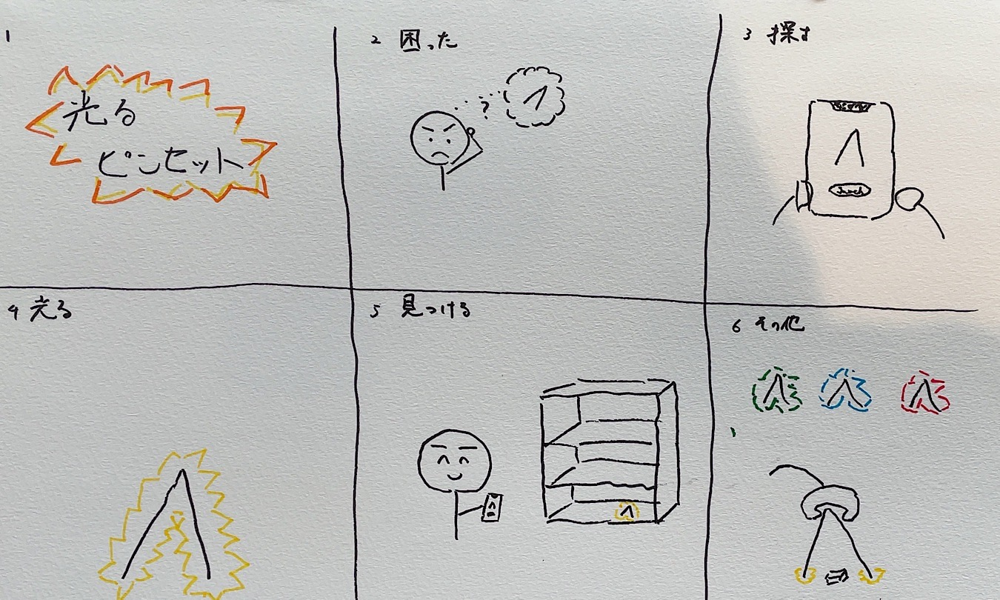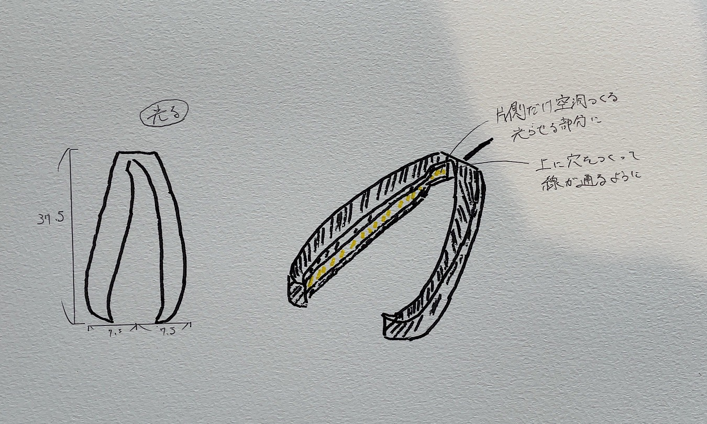光るピンセットを目指していたものの挫折...
より見た目を意識したイヤリング型ピンセットへ変更。
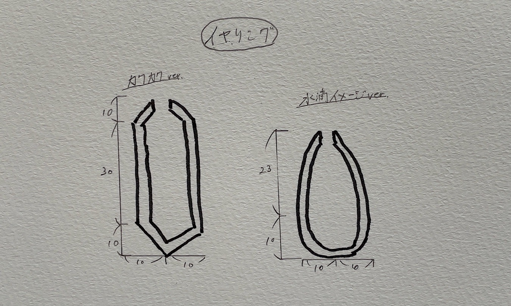
＜完成作品＞
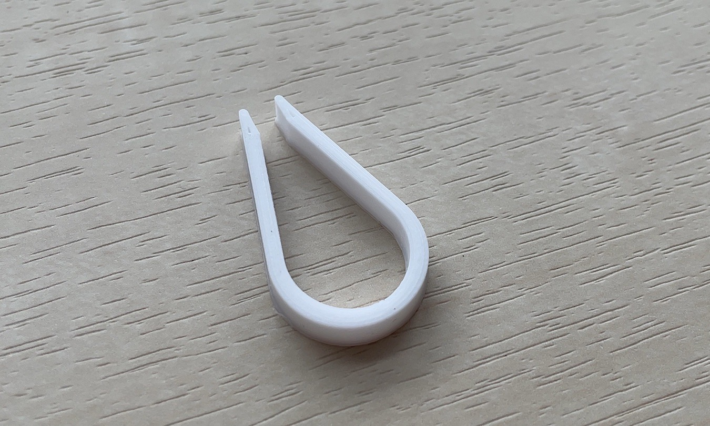＜設計ファイル＞
イヤリング型ピンセット＜作品の説明＞
ピンセットとイヤリングの境を壊した作品。イヤリング、ピンセットの両方で使用できる。
＜なぜこの作品を作ろうと思ったか＞
光るピンセットの作成に苦戦していたところ、仲間からの「イヤリングとしても使えそうじゃない？」という言葉からこの作品を思いついた。イヤリング、ピンセットの両方で使用できるものがあれば便利だと思い、この作品を作成した。
＜制作プロセス＞
当初、光るピンセットとして制作を開始。改良を重ね、光る部分を空洞にし、曲線を使って見た目も美しくしていった。
光るピンセットを印刷。しかしながら、空洞部分がうまくいかず、形の変更を決断。
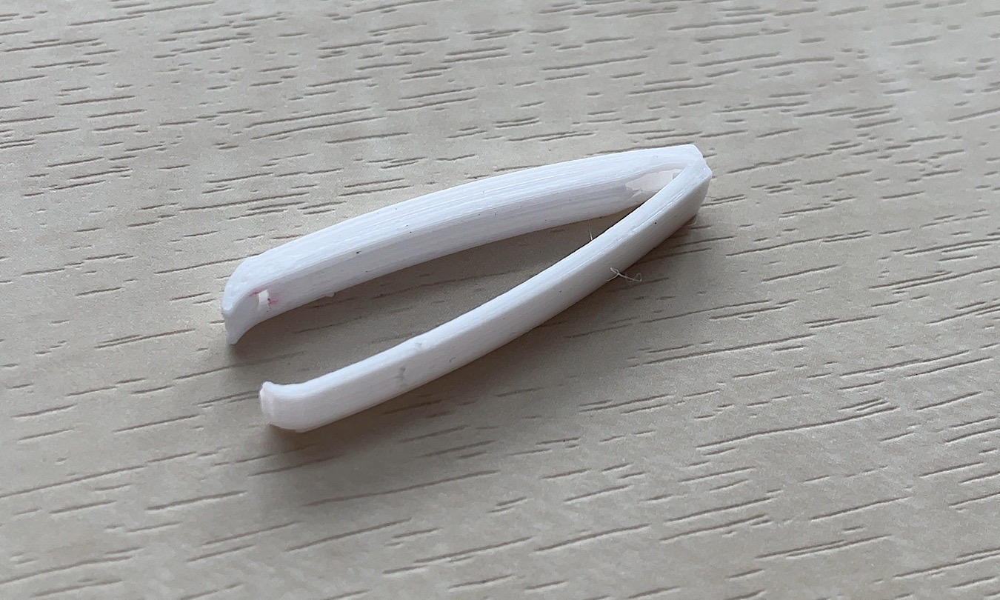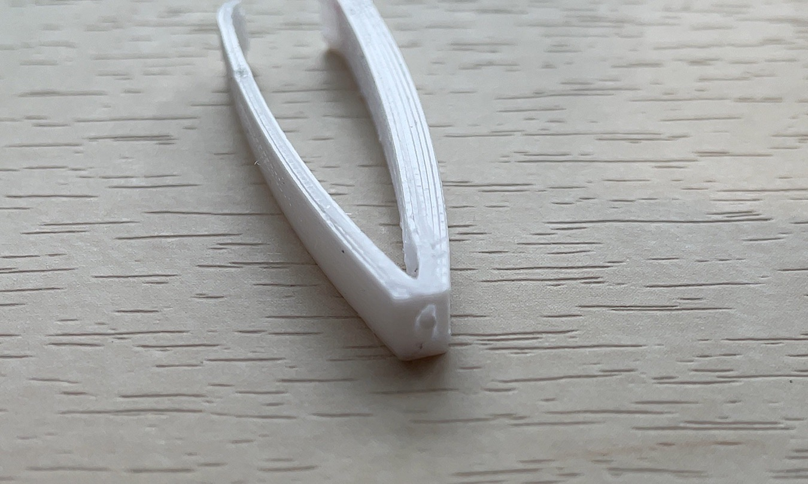
ここでグループの仲間から、「イヤリングとしても使えそうじゃない？」と言われ、イヤリング型光るピンセットを思いつく。
そして、改良版の構想。空洞部分がうまく印刷されるように改良した。
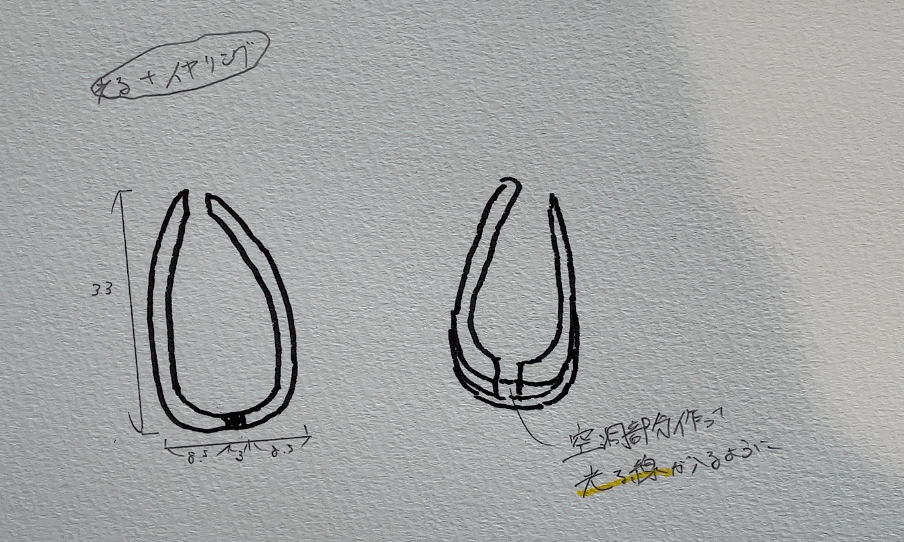
改良版印刷。上手く印刷されたものの、空洞によって結合部分が弱くなってしまった。
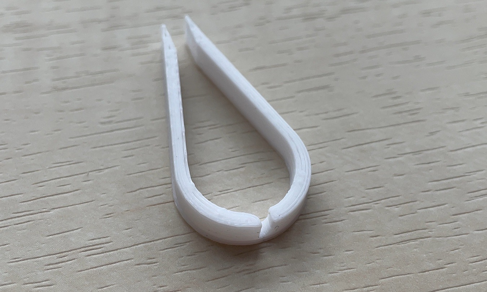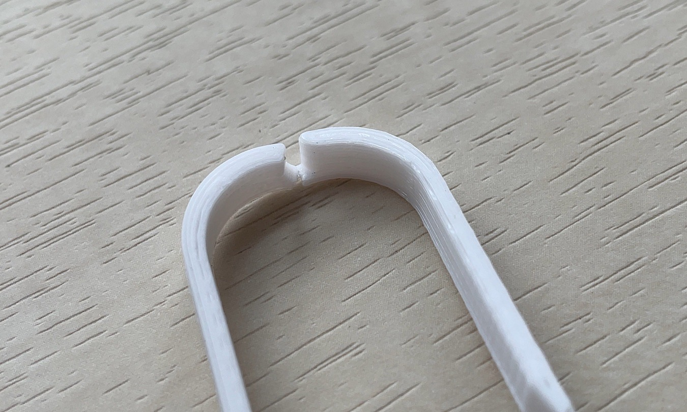
現在の自分のFusion360を扱う技術では光る機能とピンセットを組み合わせることが難しいと考え、光る機能を断念。
より見た目面のブラッシュアップを進め、イヤリング型ピンセットの作成を行った。
試しに作ってみたところ、少し大きくてイヤリングとして使いづらいと感じた。
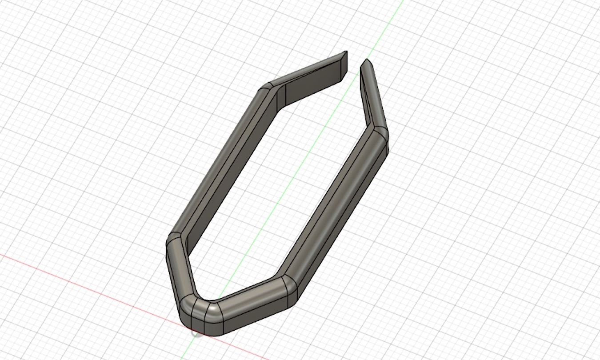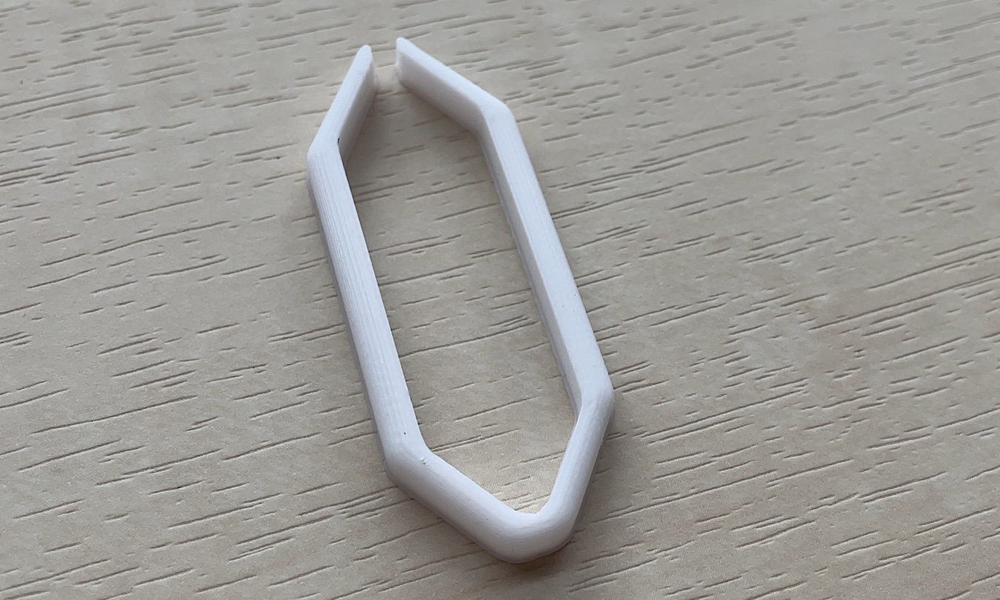
少し小さく、そして水滴をイメージした形へと変更。
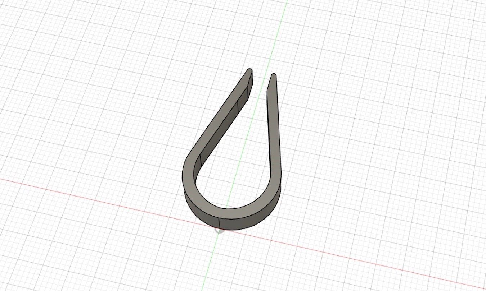
完成。